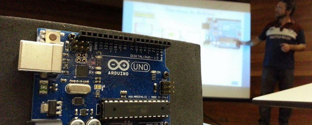

Calros Delfino - Consultoria e Projetos

27 anos de mercado, iniciei profissionalmente com programação e com a demanda por profissionais qualificado em suporte a rede de computadores, me especializei iniciando com o Xenix (um dialeto UNIX), migrando inicialmente para o Windows NT e depois integrando e complementando com o Linux quando este começou a dominar o mercado em 1996.
Em paralelo atuei de estagiário a consultor, atuando como programador e suporte, nas linguagens Clipper, Dataflex, Cobol, Java, PHP e atualmente com C/C++.
Atualmente ministro cursos com Arduino, levando o conhecimento necessário para técnicos, engenheiros e hobbistas que querem dominar esta maravilhosa tecnologia e empoderar seus projetos.
Visite a página Cursos para conhecer os cursos e palestras que tenho ministrado, e quais estou preparando para atender a demanda atual.

Consultoria e Projetos
Aguarde
Estamos trabalhando em um novo layout mais moderno e direto, mais leve. Além de mais conteúdo atualizado. Dicas, tutoriais e muito conhecimento.